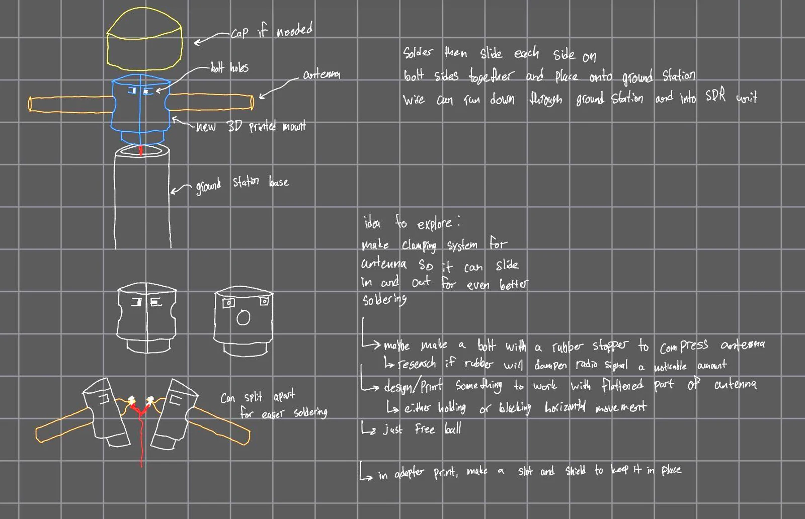
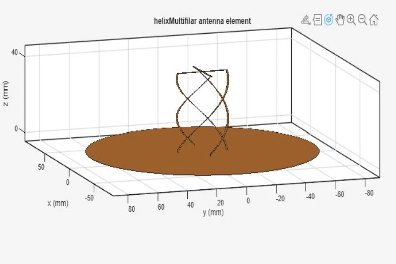
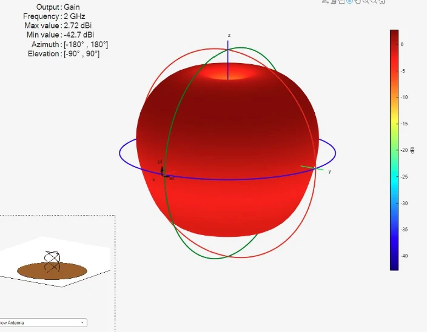
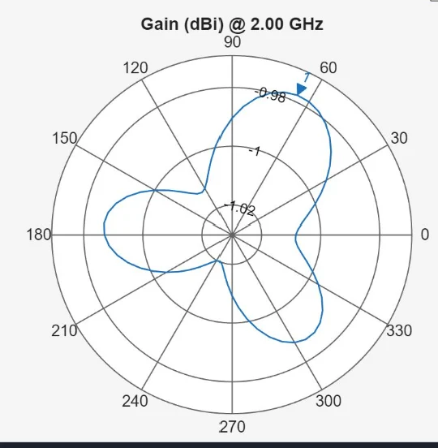
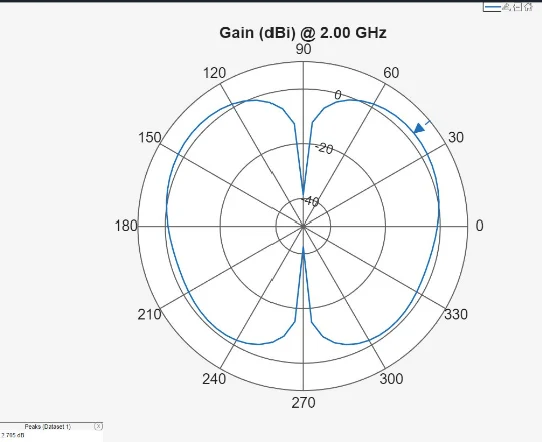
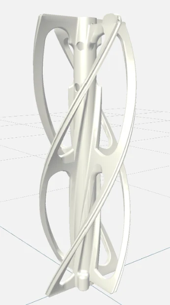
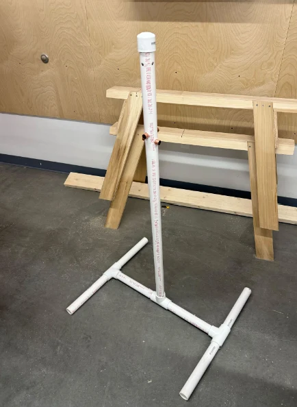
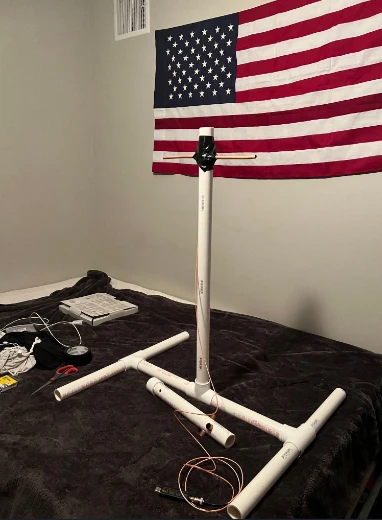
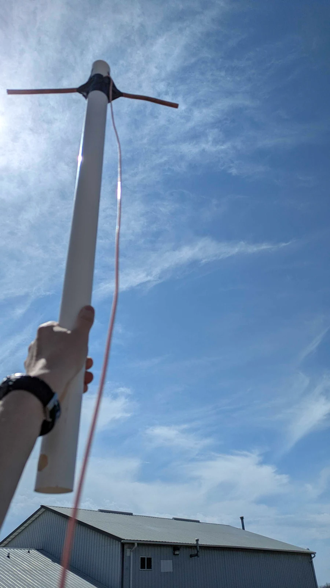
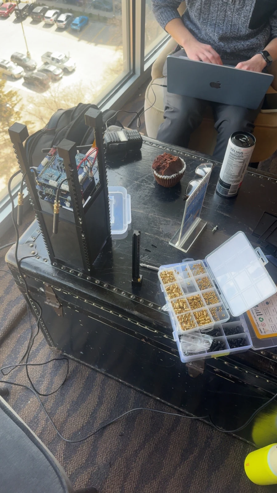

RF antennas & ground station
Antenna modeling, prototype assembly, and ground-station hardware concepts with SRG’s RF subteam.
My contributions
I work with SRG’s RF subteam on antenna modeling, prototype builds, and ground-station integration concepts.
Our work includes MATLAB antenna studies, an initial quadrifilar helix (QFH) mockup, a dipole antenna build, and a draft adapter to connect antenna hardware to the ground station.
Ground-station adapter concept
Adapter concept · In development
We are exploring a split, 3D-printed adapter that supports the antenna elements on the ground-station mast. The concept separates into two halves for access to the soldered connections, with an internal path for wiring to the software-defined radio (SDR).

Access for assembly
A split housing would allow the two sides to separate while connections are made.
Antenna retention
Bolt and clamping options are being considered to locate the antenna elements.
Cable routing
The proposed wiring path runs down through the mast toward the SDR.
QFH antenna modeling
MATLAB studies · Initial CAD mockup
The subteam’s quadrifilar helix studies combine a MATLAB antenna model with three-dimensional gain and polar-pattern views. An initial CAD mockup explores the physical geometry alongside the modeling work.




The plots show exploratory simulations at the displayed 2 GHz setting. They are separate from the dipole build below and do not represent measured antenna performance.

Initial QFH mockup
The CAD mockup shows an early antenna geometry and its support structure. It is an initial configuration for further development.
Dipole build and testing
Team build · Assembly & testing
The dipole work moves from a PVC support structure and antenna assembly to the completed prototype and team testing. These images document the build and test setup.



